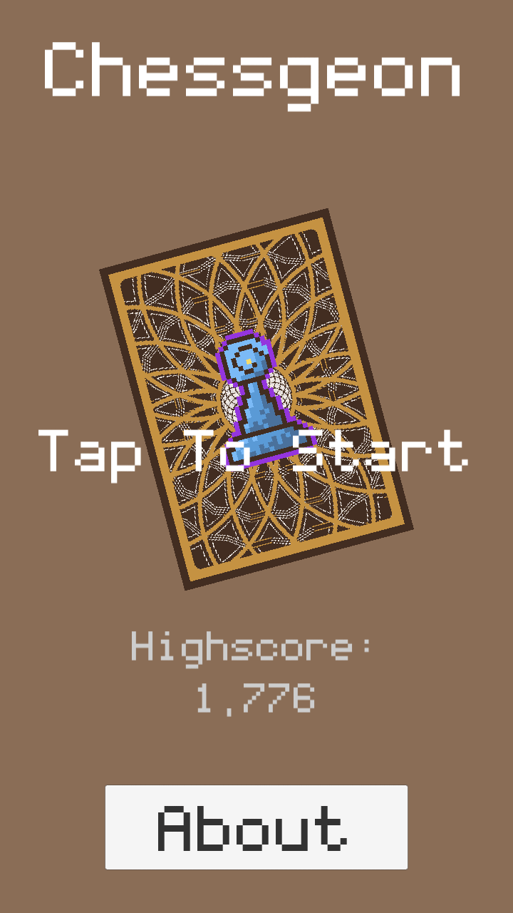
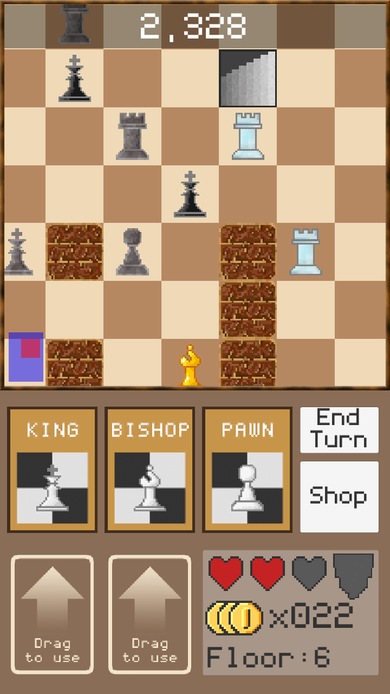
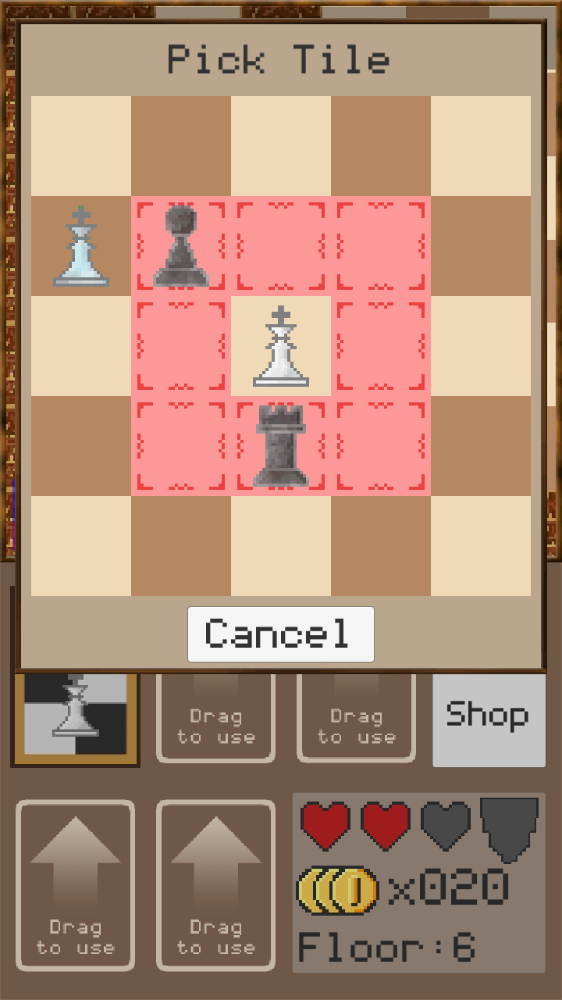

There is a new version of this game. Click here to check it out!


Chessgeon is an unique twist on traditional chess. Chain cards into combos and clear as many dungeon floors as you can!
The soundtrack was composed by my junior, David Chew. Sound FX provided by Universal Sound FX package on Unity Asset Store. All other assets and code were done by me. Chessgeon is made using the Unity Game Engine for both iOS and Android. It is currently in alpha, v0.7
All AI chess pieces in the game are powered by an A* algorithm, optimised by using binary heaps and hash sets. This A* algorithm can run multiple full searches (bottom left to top right) across a 32x32 grid on mobile without noticeable lag.
The A* also uses a swappable grid system to cater for the five different types of chess piece movements. The Strategy Design Pattern was utilised for this implementation. Each heuristic and neighbour calculation were delegated into the Strategy pattern.
You can find the source of the project on my GitHub repository here: https://github.com/raynertanxw/MGPG_Chess-geon

